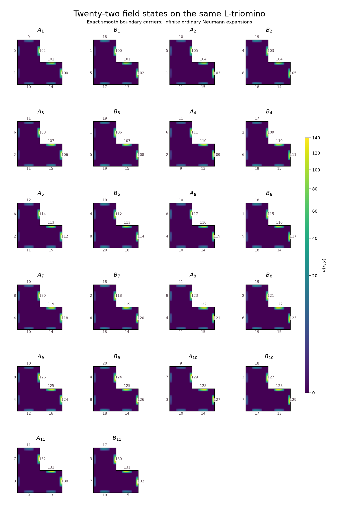
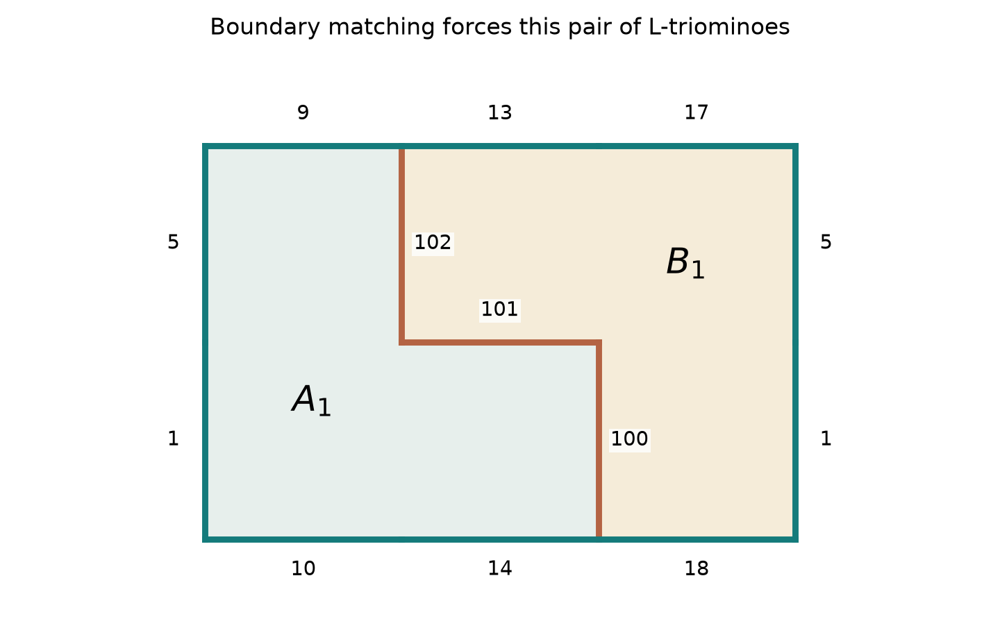
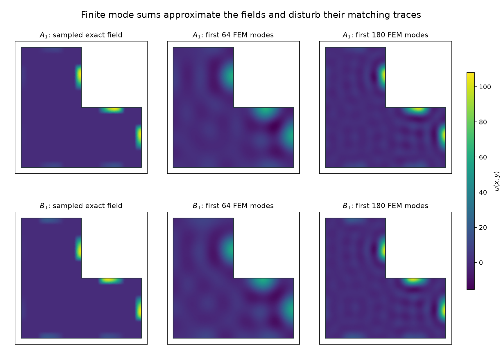

L-triomino only · updated 9 October 2026
The L-triomino: boundary matching and modes
A construction works with twenty-two allowed smooth field states on the same L-triomino. Every state satisfies Neumann conditions and has an infinite expansion in its ordinary eigenmodes. An exact construction using finitely many eigenmodes remains unresolved here.
What has been obtained
A result for the L-triomino itself. Take copies of the unit L-triomino on the integer grid, with quarter-turn rotations allowed and reflections excluded. Require each copy to carry one of twenty-two specified fields, with fixed amplitudes, and require equality of scalar values on every touching boundary. Legal infinite tilings exist, and every legal decorated tiling has no nonzero translation period.
Aperiodicity here includes the field states. Erasing the fields leaves a periodic arrangement of L-triomino pairs, with periods \((3,0)\) and \((0,2)\) in the canonical orientation. The nonperiodic information is carried by the allowed fields and their modal coefficients.
The ordinary boundary operator is shared by every state:
\[ \Omega=\bigl([0,2]\times[0,1]\bigr)\cup\bigl([0,1]\times[1,2]\bigr), \qquad A_N=-\Delta,\qquad \partial_\nu u=0\text{ on }\partial\Omega. \]The finite palette is an additional constraint on the total field; homogeneous Neumann conditions alone do not force aperiodicity. Each allowed field combines infinitely many eigenvalues. This result does not supply a single-eigenvalue solution, a finite-mode palette, unrestricted reflected placements, or a spectral test from the eigenvalue list alone.
| Question | Status in this study |
|---|---|
| L geometry throughout? | Yes. Every physical tile is the same L-triomino. |
| Exact Dirichlet or Neumann conditions? | Exact homogeneous Neumann conditions for every state. |
| Boundary matching forces aperiodicity? | Yes for the decorated tiling, with the declared finite palette and placement rules. |
| Finitely many eigenmodes per state? | No. The present exact construction requires infinitely many. |
| One eigenvalue or matching each frequency separately? | No result of that kind is established. |
Independent traces on the eight unit segments
The long sides are divided into unit segments only to specify their traces. The domain and its Neumann operator keep the original L shape. Define an even smooth compact bump and an asymmetric tangential profile:
\[ K(z)=\begin{cases}\exp\!\left(1-\dfrac1{1-z^2}\right),&|z|<1,\\0,&|z|\ge1,\end{cases} \qquad G_\sigma(s)=K\bigl(4(s-\tfrac12)\bigr)e^{2\sigma(s-1/2)},\quad \sigma\in\{-1,1\}. \]The profile is supported inside the middle half of a unit segment and has value one at its midpoint. Reversing it changes the sign of the profile parameter:
\[ G_{-1}(s)=G_1(1-s),\qquad \frac{G_1(s)}{G_{-1}(s)}=e^{4(s-1/2)}\quad\left(\tfrac14<s<\tfrac34\right). \]Thus two nonzero traces agree exactly when both their amplitudes and their forward/reversed profiles agree. Sampling is not the justification for this equivalence.
Coordinates of all eight boundary segments
| Segment | Endpoints in increasing coordinate order | Outward unit normal |
|---|---|---|
| \(e_0\) | \((0, 0)\to(1, 0)\) | \((0, -1)\) |
| \(e_1\) | \((1, 0)\to(2, 0)\) | \((0, -1)\) |
| \(e_2\) | \((2, 0)\to(2, 1)\) | \((1, 0)\) |
| \(e_3\) | \((1, 1)\to(2, 1)\) | \((0, 1)\) |
| \(e_4\) | \((1, 1)\to(1, 2)\) | \((1, 0)\) |
| \(e_5\) | \((0, 2)\to(1, 2)\) | \((0, 1)\) |
| \(e_6\) | \((0, 1)\to(0, 2)\) | \((-1, 0)\) |
| \(e_7\) | \((0, 0)\to(0, 1)\) | \((-1, 0)\) |
For segment endpoints \(p_j,q_j\) and outward normal \(\nu_j\), write the tangential coordinate and inward distance as
\[ s_j(x)=(x-p_j)\cdot(q_j-p_j),\qquad r_j(x)=-(x-p_j)\cdot\nu_j. \]Each field state has an eight-component amplitude vector and a profile direction:
\[ u_{a,\sigma}(x)=\sum_{j=0}^7 a_jG_\sigma\bigl(s_j(x)\bigr)K\bigl(8r_j(x)\bigr). \]The collars have width \(1/8\) and avoid all corners and other boundary segments. On the interior of the specified unit segment, the trace is exactly \(a_jG_\sigma\). Its normal derivative is zero because \(K'(0)=0\). Other summands vanish near that segment. Every state is smooth up to the polygon boundary and is zero near the corners, including the reentrant corner. These facts certify the Neumann condition pointwise on open sides and in the ordinary operator domain.
If two states have equal traces along a seam, their tangential derivatives agree and both outward normal derivatives vanish. Their total fields therefore glue with continuity and flux cancellation. This static gluing does not turn a superposition of different eigenvalues into one Helmholtz solution.
Twenty-two states, all on the L-triomino
Use two field roles for each of eleven color quadruples \(t=(w,e,s,n)\). The quadruples come from Jeandel–Rao's Figure 4; their Theorem 3 supplies infinite existence and aperiodicity for the encoded matching system. [1] The L construction and its reduction below are derived here.
| Index | \(w\) | \(e\) | \(s\) | \(n\) |
|---|---|---|---|---|
| \(1\) | \(0\) | \(0\) | \(1\) | \(0\) |
| \(2\) | \(0\) | \(3\) | \(2\) | \(1\) |
| \(3\) | \(1\) | \(0\) | \(2\) | \(2\) |
| \(4\) | \(1\) | \(1\) | \(0\) | \(2\) |
| \(5\) | \(1\) | \(3\) | \(2\) | \(3\) |
| \(6\) | \(3\) | \(0\) | \(1\) | \(1\) |
| \(7\) | \(3\) | \(1\) | \(1\) | \(1\) |
| \(8\) | \(3\) | \(1\) | \(2\) | \(2\) |
| \(9\) | \(3\) | \(3\) | \(3\) | \(1\) |
| \(10\) | \(2\) | \(2\) | \(1\) | \(0\) |
| \(11\) | \(2\) | \(2\) | \(0\) | \(2\) |
External vertical and horizontal traces carry both a color and a position within the eventual pair boundary. Internal connectors carry a pair index and a connector index. Their amplitudes occupy disjoint ranges:
\[ V_r(c)=1+4r+c\quad(r=0,1),\qquad H_r(c)=9+4r+c\quad(r=0,1,2),\qquad I_j(t)=100+3(t-1)+j\quad(j=0,1,2). \]In the boundary-segment order above, the two allowed fields for index \(t\) are
\[ A_t=u_{a^A_t,1},\qquad a^A_t=\bigl(H_0(s),H_1(s),I_0(t),I_1(t),I_2(t),H_0(n),V_1(w),V_0(w)\bigr), \] \[ B_t=u_{a^B_t,-1},\qquad a^B_t=\bigl(H_2(n),H_1(n),I_2(t),I_1(t),I_0(t),H_2(s),V_0(e),V_1(e)\bigr). \]These are fixed physical amplitudes. Independently normalizing fields, changing their signs or permitting arbitrary linear combinations changes the problem.

Why these rules force aperiodicity

- Every L has a forced partner. Its \(I_0(t)\) trace is nonzero and occurs on exactly one unit segment. Only a state with the same index can match its amplitude. The outward normals require a relative half-turn; the asymmetric profile then requires the opposite field role. Aligning the segments fixes the partner's translation. An \(A_t\) at the origin can only meet \(B_t\) transformed by \(x\mapsto(3,2)-x\) at this connector.
- The pair is legal and unique. Its three cells and the partner's three cells are disjoint and fill a \(3\times2\) rectangle. The other two internal traces match as well. Every tile has the same uniquely determined partner in reverse, so any legal tiling decomposes into disjoint pairs.
- Pairs align into a lattice. The disjoint vertical/horizontal amplitude ranges exclude relative quarter-turns. Profile reversal excludes relative half-turns. The position codes on external segments exclude staggered contacts. Consequently every edge-sharing pair of rectangles has the same orientation and relative origin \((\pm3,0)\) or \((0,\pm2)\). The contact graph of a plane tiling is connected, so all pairs lie on one common rectangular lattice, up to a global quarter-turn and grid phase.
- Decoding is exact. Read the four colors from each pair. External trace matching is precisely east-to-west and north-to-south color equality. Hence every legal L tiling decodes to a tiling by the cited eleven-state system. Conversely every tiling of that system expands into a legal tiling by these L states.
- Periods cannot survive. A translation period would preserve the locally recognizable forced pairs and their rectangular lattice. It would induce a nonzero integer translation period in the decoded system, contradicting the cited theorem. That theorem also supplies at least one infinite tiling, so the conclusion is forced aperiodicity rather than nonexistence.
The exact contact receipt checks every role's forced connector partner and all \(12{,}342\) possible integer edge-sharing rectangle contacts, over every pair of indices and all four relative rotations. Exactly \(136\) directed contacts pass, corresponding to the four directions of the known matching table. The analytic reduction establishes the infinite conclusion; this finite audit checks its geometry and labels.
Placement scope matters. Reflections are excluded. If reflected copies are added, one legal rectangular pair can be mirrored repeatedly across its outer sides, producing a periodic tiling with periods \((6,0)\) and \((0,4)\). Noninteger or freely rotated placements are also outside the present model. No minimality or enforcement of the chair substitution is claimed.
What the ordinary Neumann spectrum contributes
Let \((\mu_k,\phi_k)\) be the real orthonormal Neumann eigenpairs of the L-triomino. The exact fields have expansions
\[ u_{a,\sigma}=\sum_{k=0}^\infty c_k\phi_k,\qquad c_k=\int_\Omega u_{a,\sigma}\phi_k,\qquad -\Delta\phi_k=\mu_k\phi_k,\quad\partial_\nu\phi_k=0. \]Because the target fields belong to \(H^1(\Omega)\), these sums converge in the Neumann form norm, equivalent to the \(H^1\) norm. The trace theorem therefore preserves their boundary profiles in \(H^{1/2}(\partial\Omega)\). Equality of the continuous target traces is the exact matching rule.
This particular encoding necessarily uses infinitely many modes. A finite Neumann eigenfunction sum is real analytic along any open straight polygon side, by even reflection of each Helmholtz eigenfunction. Our nonzero trace vanishes on open subintervals of that same side. The identity theorem rules out any finite sum representing it exactly. This is a limitation of the constructed compact-profile encoding; it does not rule out every possible finite-mode L palette.

For the first field, on the finer mesh, the numerical projections give:
| Retained FEM modes | Fraction of sampled squared \(L^2\) norm captured | Largest sampled boundary-value error / target peak |
|---|---|---|
| \(16\) | \(17.62\%\) | \(88.11\%\) |
| \(32\) | \(40.64\%\) | \(71.39\%\) |
| \(64\) | \(67.60\%\) | \(46.34\%\) |
| \(128\) | \(87.36\%\) | \(24.95\%\) |
| \(180\) | \(94.94\%\) | \(14.68\%\) |
The two meshes have \(3343\) and \(13{,}133\) nodes; each solve retains \(180\) Neumann modes. The largest last-refinement relative eigenvalue movement is approximately \(4.94\%\). Positive-mode matrix residuals are below \(1.5\times10^{-12}\). These are FEM diagnostics, without continuum error enclosures. Capturing roughly \(95\%\) of the sampled squared norm still leaves substantial boundary errors, so it does not transfer the exact aperiodicity proof to the truncated fields. The FEM operator imposes Neumann conditions weakly; a plotted piecewise-linear normal derivative need not vanish pointwise.
What remains open in this L-only investigation
The construction answers the version allowing a finite list of total field states with infinite modal expansions. Finding a palette made from finitely many ordinary L-triomino eigenfunctions remains open here. A single-eigenvalue construction, a more natural coefficient-selection mechanism, and removal of the placement restrictions also require further work. None follows from the numerical truncations.
The inherited arithmetic functions \(\cos(m\pi x)\cos(n\pi y)\) satisfy Neumann conditions on the L, but their traces have extra reflection and period relations. They cannot provide arbitrary independent unit-segment profiles on its long sides. The full L eigenbasis supplies the flexibility used in the infinite construction. This is a connection between boundary traces and modal coefficients, rather than a classification from eigenvalues alone.
Sources and reproduction
- Jeandel and Rao. An aperiodic set of 11 Wang tiles. Advances in Combinatorics 2021:1. Figure 4 and Theorem 3 provide the four-color system encoded by the L pairs. The L-triomino construction and proof above are deductions in these Notes.
Construction and exhaustive contact audit · Neumann FEM projections · Coefficients, estimates and projection receipt. No tiling/search engine is created or modified; these are a specialized continuum construction and contact verifier, with no claimed GCTS frontier-search conformance.